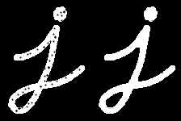

Refinamento de Máscaras de Segmentação
Nessa atividade, vamos aprender a refinar máscaras de segmentação utilizando operações morfológicas. Para isso, vamos utilizar a biblioteca OpenCV.
Antes de começar, vamos abrir a imagem cores.jpg da atividade de segmentação do módulo anterior e segmentar a cor roxa utilizando o espaço de cores HSV. Para isso, vamos utilizar o código abaixo:
{kind=link}
import cv2
import matplotlib.pyplot as plt
import numpy as np
img = cv2.imread("img/cores.jpg", cv2.IMREAD_COLOR)
# Faz a conversão para o espaço HSV
hsv = cv2.cvtColor(img, cv2.COLOR_BGR2HSV)
# Segmenta apenas a cor violeta
menor = (260//2, 50, 50)
maior = (280//2, 255, 255)
mask_violeta = cv2.inRange(hsv, menor, maior)
cv2.imshow("image", img)
cv2.imshow("mask", mask_violeta)
cv2.waitKey()
cv2.destroyAllWindows()
Note que a mascara gerada ainda segmenta partes da imagem que não representam a cor roxa. Para remover essas partes, vamos utilizar operações morfológicas.
Operações Morfológicas
DICA: Tutorial de operações morfológicas do OpenCV: OpenCV Morphological Operations Tutorial
Nos exemplos anteriores, notamos frequentemente que as máscaras geradas apresentam buracos e/ou ilhas. Para esclarecer:
- Buracos são pequenos segmentos de pixels pretos dentro de regiões de pixels brancos
- Ilhas são pequenos segmentos de pixels brancos dentro de regiões de pixels pretos.
Em geral, buracos e ilhas são regiões onde houve falha na segmentação da imagem. Para tratar imagens com esses problemas, a área de processamento de imagens usa um conjunto de técnicas conhecidas como Morfologia Matemática. Elas surgiram no problema de análise da estrutira de cristais, mas obtiveram muito sucesso na área de processamento de imagens.
As operações de morfologia matemática se baseima na ideia de um elemento estruturante ou kernel, que podemos pensar em uma pequena janela quadrada, com as dimensões de poucos pixels, que vasculham a imagem realizando uma de duas operações básicas:
-
Erosão: Esta operação causa o encolhimento de regiões brancas e o alargamento das regiões pretas. Na erosão, se qualquer pixel na área do elemento estruturante (kernel) é preto, o pixel central é convertido para preto. Essencialmente, isso remove pequenas manchas brancas (ilhas) e estreita regiões brancas maiores.
-
Dilatação: O oposto da erosão, a dilatação expande as regiões brancas e reduz as regiões pretas. Se qualquer pixel na área do kernel é branco, o pixel central é convertido para branco. Isso aumenta as regiões brancas, preenchendo buracos e expandindo áreas brancas menores.
Vamos examinar os resultados dessas no código seguinte:
Nele, vamos utilizar as seguintes funções do OpenCV:
-
cv2.getStructuringElement: Cria um elemento estruturante (kernel) para ser utilizado nas operações morfológicas. Recebe os seguintes parâmetros:shape: Forma do kernel. Pode sercv2.MORPH_RECT(retangular),cv2.MORPH_ELLIPSE(elíptico) oucv2.MORPH_CROSS(cruz).ksize: Tamanho do kernel. Deve ser uma tupla com dois valores inteiros positivos.
-
cv2.morphologyEx: Aplica uma operação morfológica em uma imagem. Recebe os seguintes parâmetros:src: Imagem de entrada.op: Tipo de operação morfológica. Pode sercv2.MORPH_OPEN(abertura),cv2.MORPH_CLOSE(fechamento),cv2.MORPH_ERODE(erosão) oucv2.MORPH_DILATE(dilatação).kernel: Elemento estruturante (kernel) a ser utilizado na operação morfológica.
mask_violeta = cv2.inRange(hsv, menor, maior)
# Definição do kernel
kernel = cv2.getStructuringElement(cv2.MORPH_ELLIPSE, (5, 5))
# Operações Morfológicas
mask_erode = cv2.morphologyEx(mask_violeta, cv2.MORPH_ERODE, kernel)
mask_dilate = cv2.morphologyEx(mask_violeta, cv2.MORPH_DILATE, kernel)
cv2.imshow("image", img)
cv2.imshow("Erosao", mask_erode)
cv2.imshow("Dilatacao", mask_dilate)
cv2.waitKey()
cv2.destroyAllWindows()
A partir dessas duas operações, diversas outras são possíveis. Dessas, operações que encontram bastante utilidade prática em processamento de imagens é a de abertura e fechamento.
Abertura
Na operação de abertura são realizadas as operações de erosão e depois de dilatação. A ideia é eliminar pequenas ilhas, que seriam eliminadas na erosão, e depois restaurar as dimensões dos agrupamentos brancos restantes. Vamos ver um exemplo de uso da abertura na máscara em que identificamos os trechos de cor violeta
No exemplo abaixo vamos utilizar um elemento estrutural no formato de um quadro 3x3, enquanto exploramos os efeitos, pense no que aconteceria se utilizássemos um elemento estruturante maior, como um quadro 5x5 ou 100x100. Ou ainda, o que aconteceria se utilizássemos um elemento estruturante com um formato diferente, como um círculo?
Note que a abertura removeu as ilhas, mas manteve as dimensões dos agrupamentos brancos.
# Cria uma janela 3x3 como elemento estruturante este elemente tem a forma de um quadrado
kernel = cv2.getStructuringElement(cv2.MORPH_RECT,(3,3))
# realiza a abertura
mask_open = cv2.morphologyEx(mask_violeta, cv2.MORPH_OPEN, kernel)
cv2.imshow("image", img)
cv2.imshow("Original", mask_violeta)
cv2.imshow("Abertura", mask_open)
cv2.waitKey()
cv2.destroyAllWindows()
Fechamento

Na operação de fechamento são realizadas as operações de dilatação e depois de erosão. A ideia é fechar pequenos buracos, que seriam eliminadas na silatação, e depois restaurar as dimensões dos agrupamentos restantes. Vamos ver um exemplo de uso do fechamento na máscara em que identificamos os trechos de cor violeta.
No exemplo abaixo vamos utilizar um elemento estrutural no formato de um quadro 3x3, enquanto exploramos os efeitos, pense no que aconteceria se utilizássemos um elemento estruturante maior, como um quadro 5x5 ou 100x100. Ou ainda, o que aconteceria se utilizássemos um elemento estruturante com um formato diferente, como um círculo?
Note que o fechamento removeu os buracos, mas manteve as dimensões dos agrupamentos brancos.
# Cria uma janela 3x3 como elemento estruturante este elemente tem a forma de um quadrado
kernel = cv2.getStructuringElement(cv2.MORPH_RECT,(3,3))
# realiza a abertura
mask_close = cv2.morphologyEx(mask_violeta, cv2.MORPH_CLOSE, kernel)
cv2.imshow("image", img)
cv2.imshow("Original", mask_violeta)
cv2.imshow("Fechamento", mask_close)
cv2.waitKey()
cv2.destroyAllWindows()
Agora, vamos utilizar a abertura e o fechamento para refinar a máscara de segmentação da cor violeta. Para isso, vamos utilizar o código abaixo:
Neste caso, vamos utilizar um elemento estruturante no formato de uma elipse 5x5. Escolhemos esse elemento porque a forma do objeto que queremos segmentar é mais próxima de uma elipse do que de um quadrado.
Note que a abertura removeu as ilhas e o fechamento removeu os buracos, gerando uma máscara mais refinada.
# Cria uma janela 3x3 como elemento estruturante este elemente tem a forma de um quadrado
kernel = cv2.getStructuringElement(cv2.MORPH_ELLIPSE,(5,5))
# realiza a abertura
mask = cv2.morphologyEx(mask_violeta, cv2.MORPH_OPEN, kernel)
mask = cv2.morphologyEx(mask, cv2.MORPH_CLOSE, kernel)
cv2.imshow("image", img)
cv2.imshow("Original", mask_violeta)
cv2.imshow("Resultado", mask)
cv2.waitKey()
cv2.destroyAllWindows()